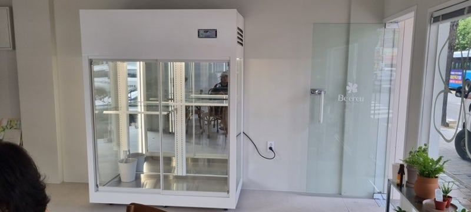

반찬(진열)쇼케이스
반찬쇼케이스 간냉식 직냉식, 반찬 종류와 판매 방식으로 고르기

문을 자주 여닫으며 여러 반찬을 진열해 파는 매장은 냉기가 고르고 성에 관리가 쉬운 간냉식이, 김치·젓갈처럼 오래 두고 촉촉함을 지켜야 하는 품목이 많은 매장은 냉기 손실이 적은 직냉식이 잘 맞습니다. 두 성격이 섞인 매장이라면 칸이나 장비를 나눠 각각의 장점을 쓰는 방법도 있습니다.
안녕하세요. 반찬가게와 반찬 코너에 들어가는 진열 쇼케이스를 맞춤 제작하는 한성쇼케이스입니다.
반찬쇼케이스 견적을 받다 보면 간냉식과 직냉식이라는 말이 꼭 나옵니다. 어느 쪽이 더 좋으냐고 물어보시는데, 사실 반찬가게에서는 무엇을 얼마나, 어떻게 파느냐에 따라 답이 달라집니다.
나물과 무침처럼 표면이 쉽게 마르는 반찬, 국물 있는 조림, 며칠씩 두고 파는 김치와 장아찌는 냉기를 대하는 방식이 서로 다르기 때문입니다.
오늘은 간냉식과 직냉식이 어떻게 다른지 먼저 짚고, 반찬가게 상황에 맞춰 어떤 기준으로 고르면 좋은지 정리해 드리겠습니다.
1. 두 방식은 냉기를 만드는 길이 다릅니다
간냉식은 기계 안쪽에서 만든 찬 공기를 팬으로 불어 내부 전체에 돌리는 방식입니다. 냉기가 고르게 퍼져 칸마다 온도 차가 적고, 자동으로 제상이 이루어져 성에가 잘 끼지 않습니다.
문을 열었다 닫아도 온도가 빨리 회복되는 편입니다.
직냉식은 내부에 지나가는 냉각 파이프가 직접 주변을 차갑게 만드는 방식입니다. 바람을 일으키지 않아 냉기 손실이 적고 내용물의 수분이 덜 날아갑니다.
대신 파이프 주변에 성에가 생겨 주기적으로 제거해야 하고, 파이프와 가까운 곳과 먼 곳의 온도 차가 생길 수 있습니다.
2. 진열 판매가 많은 매장은 간냉식
손님이 오갈 때마다 직원이 문을 열고 반찬을 담아 드리는 매장은 하루에도 수없이 문이 열립니다. 이런 환경에서는 온도 회복이 빠르고 성에 걱정이 적은 간냉식이 관리하기 편합니다.
유리에 김이 덜 서려 반찬 색이 잘 보이는 것도 장점입니다.
다만 팬 바람이 반찬 표면에 직접 닿으면 나물이나 전이 쉽게 마릅니다. 간냉식을 고르실 때는 냉기가 반찬 위로 세게 불지 않도록 토출구 위치가 설계됐는지, 용기에 뚜껑을 덮어 진열할 수 있는 구조인지 함께 확인해 보세요.
- 냉기 토출구가 반찬 위로 직접 향하지 않는지 보세요.
- 뚜껑 있는 용기를 쓸 수 있는 단 높이인지 확인하세요.


3. 김치·장아찌 비중이 높다면 직냉식
김치, 깍두기, 젓갈, 장아찌처럼 며칠에 걸쳐 파는 품목은 촉촉함과 일정한 저온 유지가 중요합니다. 직냉식은 바람으로 수분을 빼앗지 않아 이런 품목을 오래 두는 데 유리하고, 구조가 단순해 고장 났을 때 수리도 비교적 수월합니다.
직냉식은 선반 높이를 바꾸기 어렵다는 단점이 자주 꼽힙니다. 오래 두는 품목은 위치를 자주 바꾸지 않으니 큰 문제가 아닌 경우가 많고, 맞춤 제작이라면 처음부터 용기 높이에 맞춘 선반으로 만들 수 있습니다.
4. 두 성격이 섞인 매장이라면
많은 반찬가게가 매일 만드는 반찬과 오래 두는 김치류를 함께 팝니다. 이럴 때는 매장 앞쪽 진열용은 간냉식으로, 김치와 장류를 두는 칸이나 별도 냉장고는 직냉식으로 나누는 구성을 검토해 보세요.
직냉식 성에는 영업이 끝난 뒤 전원을 끄고 상품을 꺼낸 상태에서 날카롭지 않은 도구로 제거하시면 됩니다.
간냉식은 응축기 먼지와 배수구 관리가 중요하니, 어느 방식이든 관리 방법을 미리 알고 고르시는 것이 좋습니다.
- 매일 반찬과 김치류 판매 비중을 나눠 보세요.
- 직냉식은 성에 제거 시간을 영업 후로 잡으세요.
체크리스트
- 문 여닫는 횟수
- 마르기 쉬운 반찬 비중
- 김치·장아찌 등 장기 보관 품목 비중
- 토출구 위치와 뚜껑 용기 사용
- 선반 높이 맞춤 여부
- 성에·배수 관리 방법
현장에서 자주 보는 경우: 직냉식은 선반을 못 바꾼다고 망설이는 매장
장기 보관 품목이 많아 직냉식이 맞는 매장인데도, 선반 높이 조절이 어렵다는 이야기를 듣고 망설이시는 사장님들이 있습니다.
직냉식은 냉기 손실이 적어 오래 보관하는 내용물에 유리하지만, 선반 쪽 구조 때문에 높이를 바꾸기 어렵다는 점이 단점으로 꼽히는 것도 사실입니다.
이럴 때는 맞춤 제작 공장에서 처음부터 쓰실 용기 높이에 맞춰 선반을 만들어 드립니다. 그러면 직냉식의 장점은 살리면서 진열 공간도 원하는 대로 쓸 수 있습니다.
필요한 조건을 먼저 정리한 뒤 그에 맞춰 설계하는 것이 가장 확실한 방법입니다.




자주 묻는 질문
간냉식이 직냉식보다 전기를 더 쓰나요?
팬과 자동 제상 장치가 함께 돌아가 상대적으로 전기 사용이 조금 더 많은 편입니다. 다만 매장 환경과 사용 습관에 따라 차이가 커서 운영 방식과 함께 비교해 보시는 게 좋습니다.
직냉식 성에는 얼마나 자주 제거해야 하나요?
문을 여닫는 횟수와 매장 습도에 따라 다릅니다. 성에가 눈에 띄게 쌓여 냉기가 약해지기 전에 영업 후 시간을 잡아 제거해 주세요.
어떤 방식이 맞는지 상담받을 수 있나요?
판매하는 반찬 종류와 하루 판매 방식, 매장 크기를 알려 주시면 맞는 냉각 방식과 구성을 안내해 드립니다.
대표전화 031-986-2458로 문의해 주세요.
매장 조건에 맞춰 만드는 한성쇼케이스
원하시는 제품 사진과 설치할 공간 사진만 보내 주셔도 매장에 맞는 구성을 추천해 드립니다.
- 전국 240여 개 A/S 전담 센터 운영
- 본사 대량 자재 매입으로 품질 대비 합리적인 가격
- 유럽제·삼성 냉각 콤프레셔 적용
- 국내 최초 쇼케이스 전문 디자이너 상주
매장 폭과 원하는 진열 구성을 알려 주세요. 실측과 견적을 안내해 드립니다.
031-986-2458